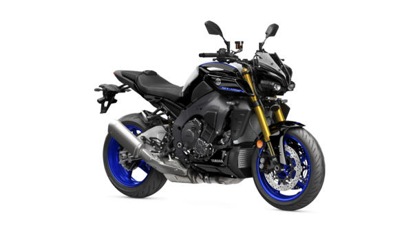

Description
Les motos Naked, également appelées roadsters, se distinguent par leur design épuré et leur absence de carénage. Elles offrent un mélange parfait de performance, de confort et de polyvalence, idéal pour la ville et les trajets routiers. Leur position de conduite droite et leur moteur réactif en font un choix populaire pour les amateurs de moto au quotidien.
Caractéristiques
- Moteur : 4 cylindres en ligne, 900cc
- Puissance : 120 chevaux
- Poids : 190 kg
- Réservoir : 15 litres
- Design : Épuré, sans carénage, avec un look brut
Avantages
Les motos Naked sont appréciées pour leur polyvalence et leur facilité d'utilisation. Leur design minimaliste les rend légères et maniables, parfaites pour la ville tout en offrant suffisamment de puissance pour les trajets routiers. Leur position de conduite confortable et leur look moderne séduisent aussi bien les débutants que les motards expérimentés.